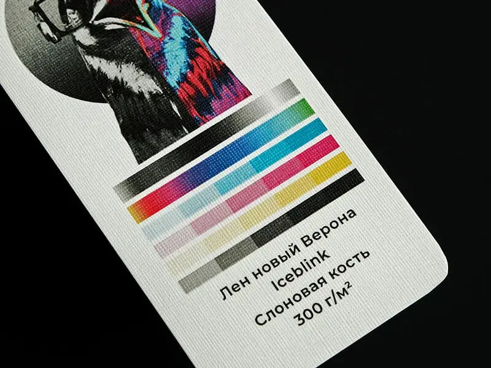
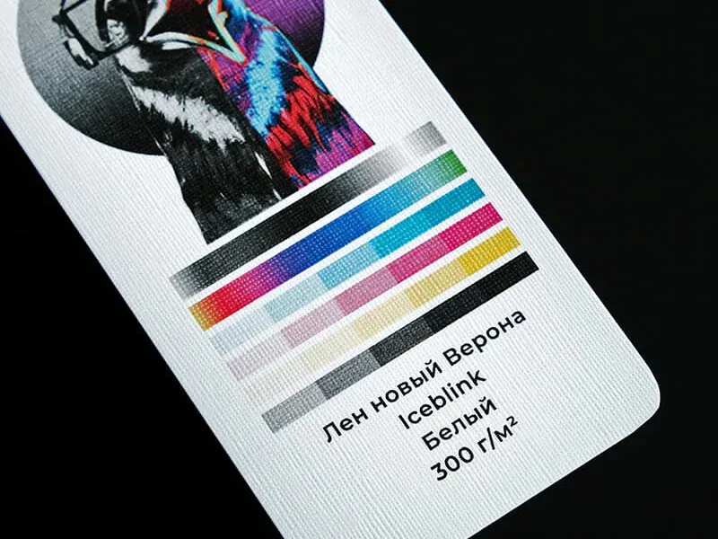
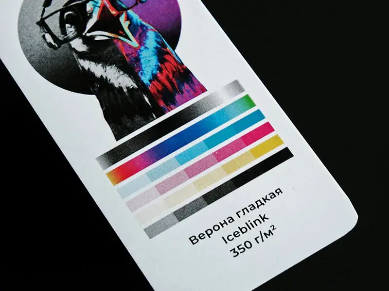
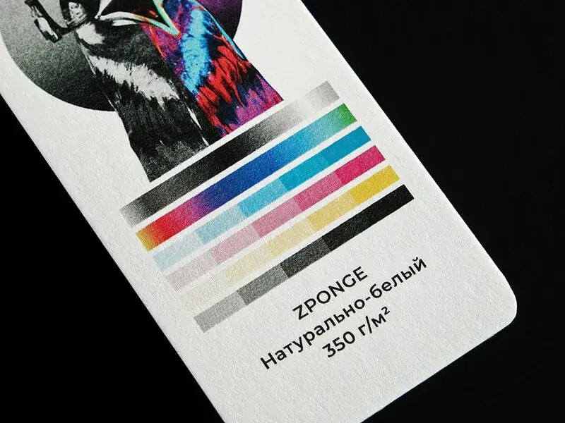
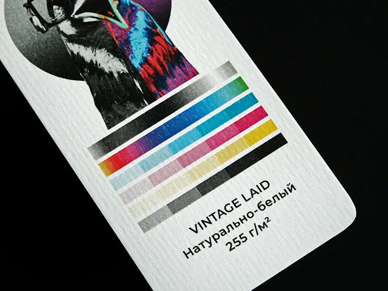
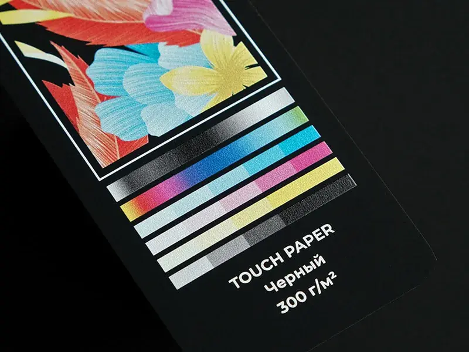
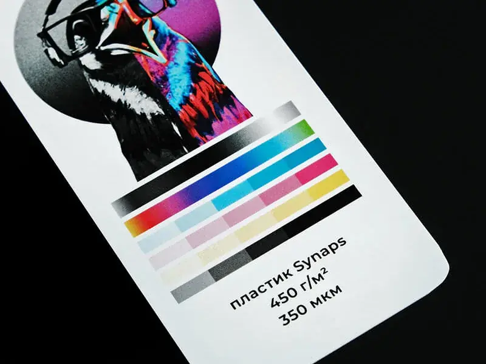
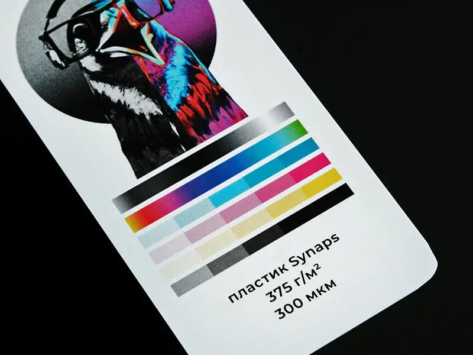
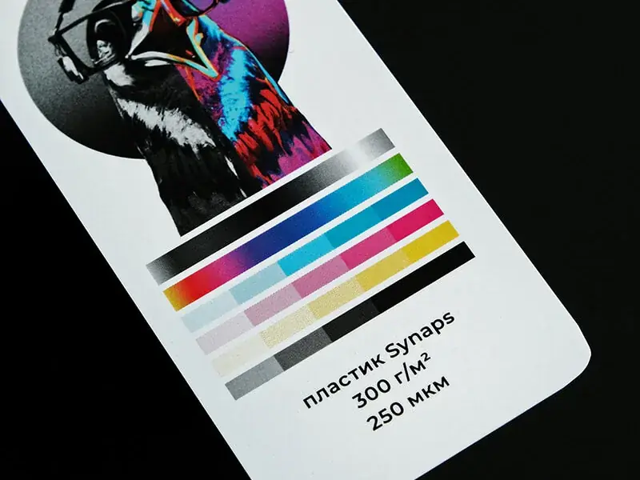

Лён Verona Iceblinkслоновая кость · 300 г/м²
Лён Verona Iceblinkбелый · 300 г/м²
Verona гладкая Iceblink350 г/м²
Zpongeнатуральный белый · 350 г/м²
Vintage Laidнатуральный белый · 255 г/м²
Touch Paperчёрный · 300 г/м²
Synaps450 г/м² · 350 мкм
Synaps375 г/м² · 300 мкм
Synaps300 г/м² · 250 мкм